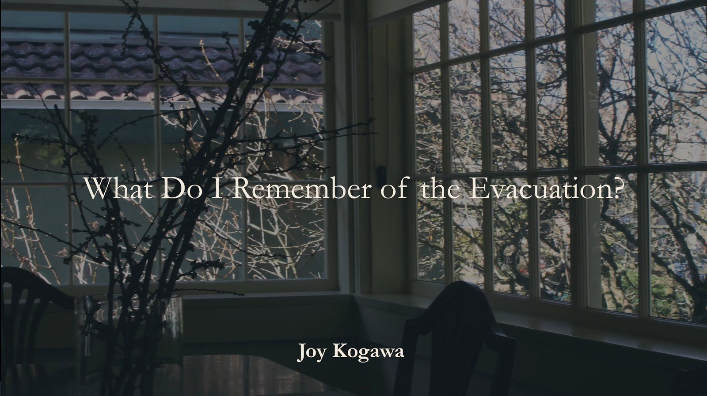
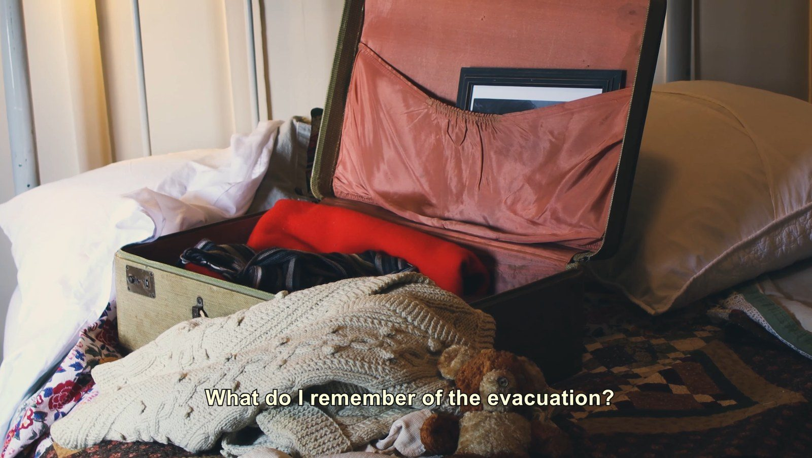
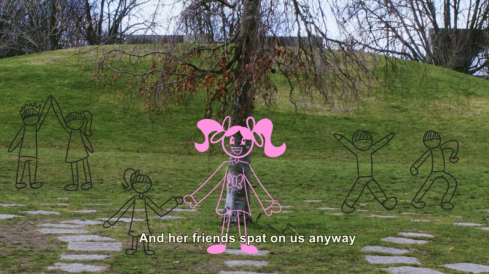
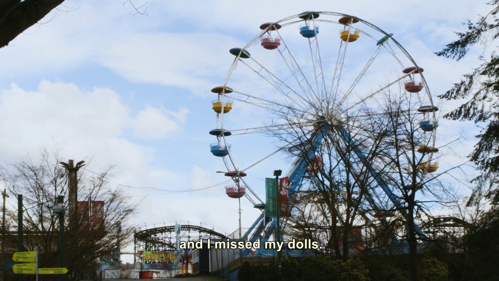

What do I remember of the Evacuation

"What do I remember of the Evacuation" - Joy Kogawa
Video Poem based on Joy Kogawa's poem about the Japanese-Canadian internment. This is the perspective of a 6 year old girl.
Watch the film
What Do I Remember of the Evacuation
5 min
The Story Behind the Film

Concept
The poem was assigned to us from a list of poems about the city of Vancouver, as part of the Vancouver City Poems project. Joy Kogawa's is written from the perspective of a six-year-old girl at the time of the Japanese-Canadian internment, and that voice is what the whole film had to carry.

Finding the Approach
Our first instinct was to make a girl's point of view the film's main perspective. Our professor pushed us away from being that literal: let the imagery evoke the feeling, and let the poem do the work of conveying that this is a child's experience. The poem is read aloud by Fiona Tinwei Lam, who organised the City Poems event, and a teammate drew scribble animations frame by frame — a child's hand appearing over the footage. Much of that footage came from the Historic Joy Kogawa House, which looks exactly as it did when the Kogawas lived there, restored and preserved by the community around it.

The Challenge
We could not get permission to film inside the Hastings Park buildings that were used during the internment. Instead we combined historical images with shots of the park taken from outside those buildings. It ended up working better than the original plan: the park is somewhere people have actually been and can place themselves in — it sits right next to the PNE, where locals spend their summers — so the history lands against something familiar rather than remote.
Reception
What we ended up with was an intensely emotional piece, and people were moved by it. The finished film was also sent to Joy Kogawa and her family, who wrote back to say they loved it and appreciated the effort we had put into it.